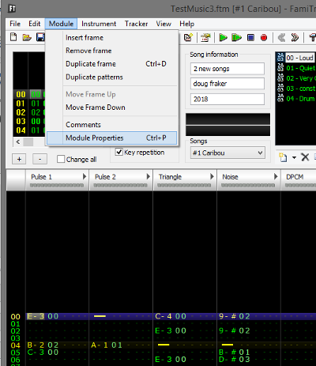
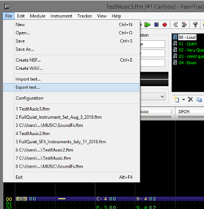

15、音乐
我前段时间写了一篇关于NES Audio文章。
https://nesdoug.com/2015/12/02/14-intro-to-sound/ （往下翻，在后面有翻译）
我们不需要对声音寄存器了解太多，我们使用Famitracker编音乐，用Famitone 2 v1.15播放音乐，我的例子中都包含famitone代码，这就足够用的了。
你需要做的就是把音乐数据文件包含在music_data下的crt0.s文件中。
我对音乐制作不是很擅长，你可以看看这个
https://youtu.be/UbGfosQHfm0
（墙外地址，以后有空再搬运油管的视频）
我很喜欢这个工具，famitone2还是有些局限性。
（这些东西有些专业，暂时不翻译了，以后再说）
1、No volume column.
2、Allowed notes are C-1..D-6, Note Cut
3、Only Volume, Arpeggio, and Pitch sequences
4、All instruments should have a volume envelope assigned
5、no Duty sequence
6、64 instruments max
7、no fx except Tempo Fxx, Looping backwards Bxx, and ending the frame early D00
8、Up to 17 sub songs in a file
由于没有音量的列，你制作的时候需要使用不同的乐器（最大的音量不同）来制作音乐。
将每首歌放到同一个文件夹中，使用“module properties”添加歌曲

一切都完成后，导出一个txt文件。您需要使用famitone2程序text2data.exe处理此文件。使用命令行，并添加-ca65开关，以便我们的汇编器在读取它时不会有任何问题。如果你想看看它们的样子，我把/ MUSIC中的所有文件都留了下来。

我写了2段音乐并放到了游戏中。
music_play(0) 播放第一段音乐
music_play(1) 播放第二段音乐
按 START 按钮切换音乐
neslib代码自动更新音频寄存器以匹配歌曲。在nmi代码的末尾，每帧调用一次FamiToneUpdate。
暂停音乐 music_pause(1)
继续播放 music_pause(0)
停止音乐 music_stop()
PS:我写了一个方法用来改变音乐的播放速度。通常情况下你只能在famitracker文件中设置速度。
比如boss战的时候我们希望音乐加速播放，或者是受伤等状态需要减速播放音乐，都可以使用上面的方法轻松实现
set_music_speed()
数字越小意味着越快，越大意味着越慢。6是默认值。
https://github.com/nesdoug/18_Music
另外，还有其他音乐驱动程序。
Pently，有一些游戏用了这个工具，如果你喜欢使用乐谱写音乐，可能这个是一个比较好的选择。他使用描述语言，用音乐宏（MML）或者LilyPond
https://github.com/pinobatch/pently
ggsound 是另一个选择，NESmaker这个软件使用了这个（使用方式不详）
https://github.com/gradualgames/ggsound
完整的famitracker驱动程序是另一种选择，但它非常大，比其他驱动程序慢一点。你可以从shiru的示例文件中获取它。
https://shiru.untergrund.net/files/src/cc65_neslib_famitracker.zip
您可以查看cppchriscpp的示例代码
https://github.com/cppchriscpp/nes-starter-kit/tree/master/source/neslib_asm/ft_drv
我还写了2个关于famitone的非官方更新
https://nesdoug.com/2018/09/05/links-and-misc/
声音介绍
你可能会为NES使用APU发声的功能犯愁，但是用了Famitracker以后，这一切都变得简单了。
下载SnoBrow开发的Sound Test NES
http://nesdev.com/sndtest.zip
他可能无法兼容所有的模拟器，FCEUX上运行没问题。
按 SELECT 按键切换声道，按 START 按键会触发声音播放。
该程序中，通道0=方波1，通道1=方波2，通道3=三角波，通道4=噪声
声音寄存器映射到$ 4000-4017
4000-4003 =方波1寄存器
4004-4007 =方波2寄存器
4008-400b =三角波寄存器
400c-400f =噪声寄存器
4010-4013 = DMC频道
4015 =控制音频输出
4017 =帧计数器
从http://wiki.nesdev.com/w/index.php/APU 搬运来的
4000-4003 = Square 1 channel
4000 = DDLC VVVV
D =占空比，改变声波的形状（10=平滑，01 或 11 =ok，00=annoying......让我想起Atari的声音）。
L =循环（重复声音）
C =等容体
V =音量（有时）
如果L或C都没有设置，他开始的时候声音很大，然后声音变小，再变小。。。
如果您将音符长度设置为0000 1（在寄存器4003中），你可以听到音量变化。V =音符长度，V为0时候还是会有声音。
如果设置了L（而C不设置），则V =重复声音的速度。较小的V =较快的重复声音。（满音量）0的V是快速的哔哔声。
如果设置了C和L，V将控制通道的音量，并且音符将无限播放，直到您将另一个值写入4000.这实际上是它在音乐代码中一直设置的方式。您可以通过计算帧来控制长度，通过每帧更改音量来创建音量包络，并通过设置音量为零或频率为零来结束音符。 要使方形通道静音，请将音量设置为零（$ 4000 = $ 30）。
4001 - 频率扫描寄存器
4001 = EPPP NSSS
E =打开频率扫描
P =更小=更快的扫描
N = 0 =向下扫描，1 =向上扫描
S =更小=更快的扫描
请注意，一旦到达扫描结束，即使您将其设置为不断播放，音符也会停止。设置扫描和循环将重复几次，直到扫描结束。这可以产生很酷的效果。
4002 = TTTT TTTT =音符频率的低字节
4003 = LLLL LTTT
L =影响音符的长度，假设您没有将其设置为播放常量音符 （L＆C均设置为4000）。非常奇怪的设置。0000 1 =很长的音符。
T =音符频率的高3位。
注意：为了播放最低音符，必须设置N标志（$ 4001）（例如，某些游戏在扫描关闭时写入$ 7f到$ 4001）。
另外：可播放的最高音符是000..0000 1000.任何频率更高（例如000..0000 0111）将从Square 1频道产生静音。你不会想要它更高，它在较高频率范围内非常烦人。
-----------
4004-4007 = Square 2 Channel，与Square 1完全相同。
-----------
4008-400b =三角形通道
4008 - CRRR RRRR（C =常数，无限音符）
R =很奇怪。更改这些数字似乎会影响音符的长度。只需将此值设置为$ ff表示常量音符，将$ 80设置为off（静音）。如果设置为$ 7f，则长度将由$ 400b的L位控制。（感谢Pokun 纠正我）。
4009 - 未使用。
400a - TTTT TTTT - 音符频率的低字节
400b - LLLL LTTT - 频率的长度和高位...有关详细信息，请参见Sq 1通道。
注意 - 三角形通道没有音量控制。此外，它将比方形通道上的相同设置低1个八度音程。与方形通道不同，三角形频率可以高于000 0000 1000（例如000 0000 0100），并且播放非常高的音高。
----------
400c-400f =噪声通道
400c - xxLC VVVV - 与方波通道相同，但没有占空比。
400d - 未使用
400e - Z - - - TTTT
Z =如果为0，听起来像白噪声
如果是1，听起来像金属铿锵声
T =音符频率，更多=更低。频率为零将播放最高音调。
400f - LLLL L - - - -
L =影响音符的长度，假设未设置为播放常量音符（L＆C均设置）。
要使噪声通道静音，请将音量设置为零（$ 400c = $ 30）。
-----
DMC频道，是一种低采样率的声音压缩。最快的采样率提供了合理的音质，但占用了大量的ROM空间。较慢的采样率占用较少的空间，但是具有恼人的高音调嗡嗡声和较低质量的声音。
谨慎使用DMC。您也可以使用非常短的循环样本，这可能适用于Bass Notes。我认为DMC最常见的用途是改进鼓声，以及听起来像人类语音的单个单词 - “战斗”。
4010 - IL- - RRRR
I =设置DMC触发的IRQ
L =循环样本
R =采样率（F =最高）
4011 - xDDD DDDD =加载。基本上是样本的起始值，这里的一些设置将使样本更安静。这也可以用来（通过不断改变值）来制作高质量的PCM声音。
4012 - AAAA AAAA =样本的地址......
％11AA AAAA.AA00 0000
因此，最低地址是11000000 00000000 = $ C000
...最高地址是11111111 11000000 = $ ffc0。
注意，DMC样本必须位于$ c000和$ ffff之间。您可以使用Famitracker制作样品。
4013 - LLLL LLLL =样本长度......
％LLLL.LLLL 0001
最小的样本是10001 = $ 11字节。最大的样本是$ ff1字节。（你可以背靠背地播放样本，如果它太短了）。
4015 - 控制打开哪些通道。使用此功能启动和停止DMC通道。
4015 - - - 5 4 3 2 1
1. Square 1
2. Square 2
3. Triangle
4. Noise
5. DMC
4017 - 我从来没有学过这是为了什么，除了大多数游戏的启动代码在开始时存储0x40，我想要关闭某种IRQ。
-------
对于前4个通道，注释将在其最后一个寄存器被写入时触发... 4003触发方形1,4007触发方形2,400b - 三角形，400f噪声。反复写入这些（每一帧）可能会产生令人不快的点击。
要触发DMC声音，首先将$ 0f写入4015，然后将$ 1f写入4015.或者，如果DMC样本已结束，仅将$ 1f写入4015将重新触发样本进行播放。
------
额外的声道。一些高级映射器（特殊盒式磁带）具有额外的声道。例如，VRC7拥有更先进的FM合成芯片（仅用于1游戏，Lagrange Point）。
-------
PCM，即。高品质的声音。我从来没有尝试过这个，但我的理解是，你可以通过将值一遍又一遍地写入4011来模拟高质量的声音。这将花费大量的CPU，以至于在这种情况下运行游戏逻辑是不可能的。也许它可以在静态标题屏幕上完成。
--------
让我们添加一些快速声音代码，只是为了好玩。如果需要，将其插入其中一个课程的无限循环中。确保声道已打开...
*（（unsigned char *）0x4015）= 0x0f;
//快速哔 -
if（（（joypad1old＆START）== 0）&&（（joypad1＆START）！= 0））{
*（（unsigned char *）0x4000）= 0x0f;
*（（unsigned char *）0x4003）= 0x01;
}
//扫频效果 - 跳跃声音
if（（（joypad1old＆START）== 0）&&（（joypad1＆START）！= 0））{
*（（unsigned char *）0x4000）= 0x0f;
*（（unsigned char *）0x4001）= 0xab;
*（（unsigned char *）0x4003）= 0x01;
}
//噪音测试 -
if（（（joypad1old＆START）== 0）&&（（joypad1＆START）！= 0））{
*（（unsigned char *）0x400c）= 0x0f;
*（（unsigned char *）0x400e）= 0x0c;
*（（unsigned char *）0x400e）= 0x00;
}
对于SoundTest程序随便用用就好，然后立即忘记一切，转到用Famitracker。
这一段随便看看就好，直接谷歌翻译的，作者都不太建议看太细，了解点就够了，直接用工具就好